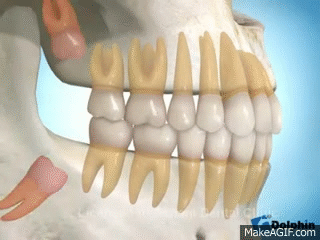

La extracción de muelas del juicio es un procedimiento quirúrgico
para extraer una o más muelas del juicio —las cuatro piezas dentales
permanentes de los adultos ubicadas en los extremos posteriores de la boca,
tanto arriba como abajo
¿Que hacer antes de una extraccion?
- Evitar las bebidas alcohólicas dos días antes de la extracción.
- No tomes comidas pesadas la noche previa y sigue una dieta equilibrada.
- En caso de requerir sedación consciente, debe venir acompañado y no podrá conducir, horas después de la cirugía.
- Si está tomando algún medicamento, debe informar a su odontólogo.

Nuestros tratamientos están diseñados para cubrir las necesidades específicas de cada paciente.